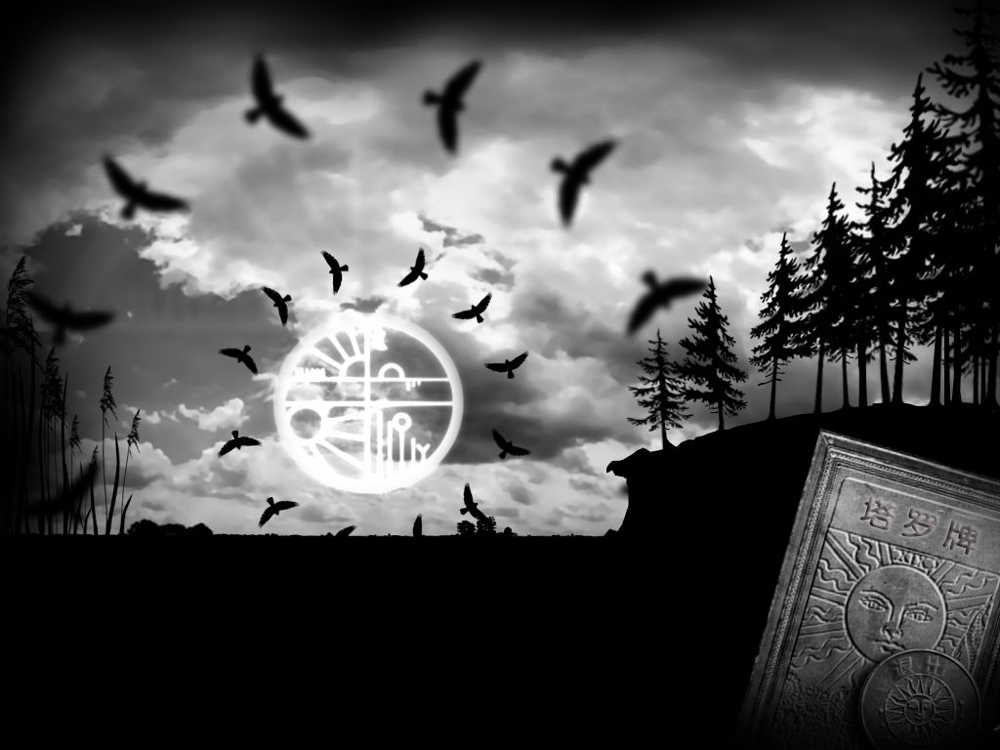
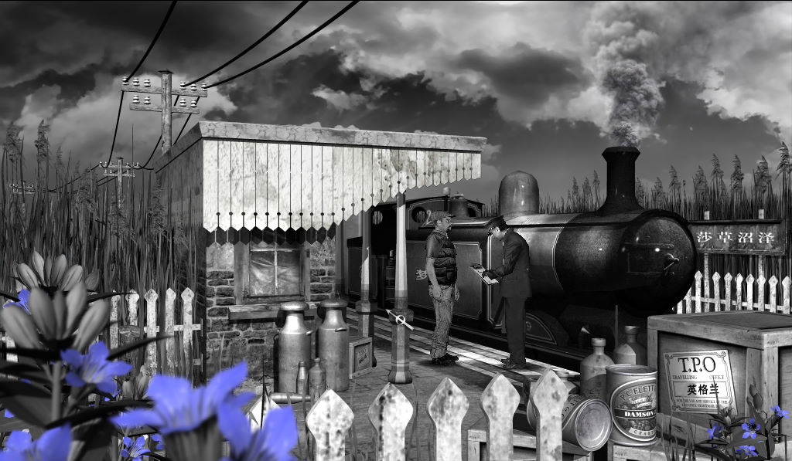

名稱：失落的王冠：捉鬼大冒險 (The Lost Crown: A Ghost-Hunting Adventure，中文版) 簡介：Darkling Room 2008年出品的冒險解謎遊戲，由Got Game代理發行 [待補]。

保護：序號（TLC-4YK9C-DR8AF-H6PR4-C3YAT-27B4Y） 備註：遊戲需要d3dx9_34.dll 檔案：thelostcrown-update1-1.rar = 1.1更新檔 chs.rar = 簡中漢化檔